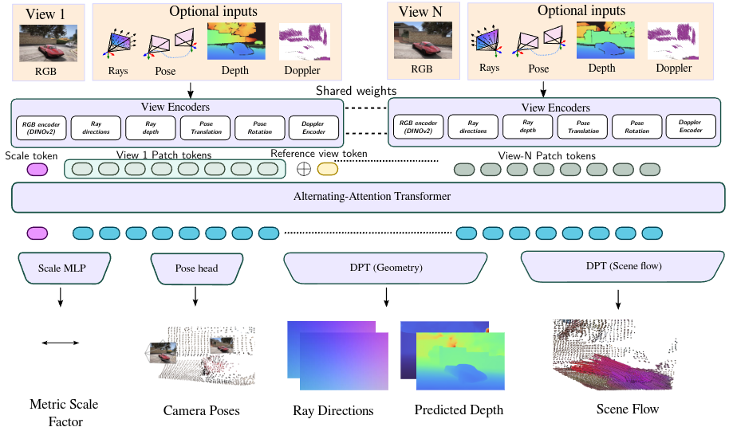
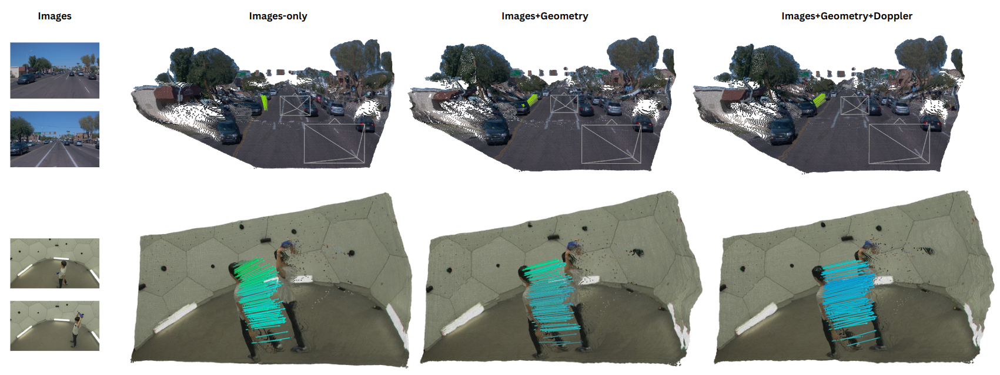
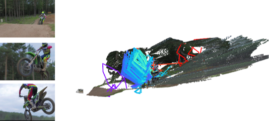
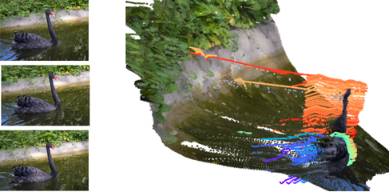
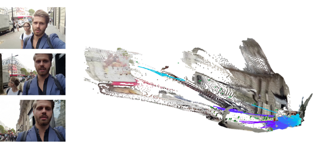

TLDR: Any4D is a multi-view transformer for
• Feed-forward • Dense • Metric-scale • Multi-modal
4D reconstruction of dynamic scenes from RGB videos and diverse setups.
Explore the 4D reconstruction results. Choose a visualization type and click on any thumbnail below to load its corresponding content.
Stroller
Bouldering
Layup
Tennis
Bigfoot
Humanoid Walking
RollerBlade
Soapbox
We present Any4D, a scalable multi-view transformer for metric-scale, dense feed-forward 4D reconstruction. Any4D directly generates per-pixel motion and geometry predictions for N frames, in contrast to prior work that typically focuses on either 2-view dense scene flow or sparse 3D point tracking. Moreover, unlike other recent methods for 4D reconstruction from monocular RGB videos, Any4D can process additional modalities and sensors such as RGB-D frames, IMU-based egomotion, and Radar Doppler measurements, when available. One of the key innovations that allows for such a flexible framework is a modular representation of a 4D scene; specifically, per-view 4D predictions are encoded using a variety of egocentric factors (depthmaps and camera intrinsics) represented in local camera coordinates, and allocentric factors (camera extrinsics and scene flow) represented in global world coordinates. We achieve superior performance across diverse setups - both in terms of accuracy (2-3X lower error) and compute efficiency (15X faster)
Any4D provides dense and precise motion estimation, whereas state-of-the-art baselines either produce reliable but sparse motion (SpatialTrackerV2) or dense per-pixel motion that is not accurate (St4RTrack).
Car Reversing
Lady Running
Stroller
RollerBlade
Overview of the Any4D architecture showing the factored approach to 4D scene representation with egocentric and allocentric factors for geometry and motion.

Any4D supports conditioning on diverse inputs including depth (ex - from RGB-D cameras), poses (ex- from IMUs), Doppler measurements (ex - from Radar) in addition to cameras. This allows the framework to adapt to various sensor setups and enhance reconstruction quality.

Any4D fails on videos with large-baseline gaps, scene motion dominates the camera image space, or motion where the background has textureless or repititive surfaces. We believe that the availability of large-scale dense scene flow and 3D tracking datasets and integrating real-time optimization techniques is key to progress in this direction.


